ЖИВЛЕННЯ
НОРМАЗа іншого стану перевірити активні аварії та живлення.
Єдина веб-карта екранів HMI, параметрів, сервісних команд, діагностичних станів і операторських процедур. Призначена для налагодження, технічного обслуговування та контрольованої діагностики.
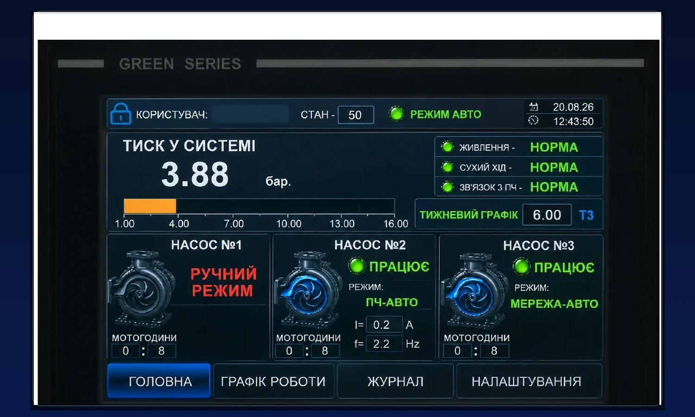
Виберіть екран HMI та об’єкт. Для кожного параметра наведено функціональне призначення, вплив на алгоритм, межі використання, рівень доступу та пов’язаний розділ технічної інструкції.

П’ять ознак, які оператор оцінює перед роботою.
За іншого стану перевірити активні аварії та живлення.
Якщо активний — не форсувати запуск; перевірити наявність води.
За втрати зв’язку перейти до журналу та передати інформацію в сервіс.
«ПОМИЛКА РЕЖИМІВ» або «НАСОС НЕ АКТИВНИЙ» потребують перевірки.
Порівнювати фактичний тиск саме з активною уставкою.
Підготовка HMI, насосів і перетворювача до автоматичної роботи.
Шафа ввімкнена, активної аварії живлення немає.
Вода є, захист сухого ходу не активний.
Потрібні насоси переведені в положення «Авто».
Дані оновлюються, зв’язок із ПЧ нормальний, аварійні повідомлення відсутні.
Контролювати відповідність станів HMI фактичній роботі насосів і тиску.

Авторизація і права доступу до робочих та сервісних параметрів.
HMI використовує облікові записи з різними правами доступу. Поточний користувач визначає, які параметри можна лише переглядати, а які дозволено змінювати.
| Рівень | Призначення | Основні дозволені дії |
|---|---|---|
| ОПЕРАТОР | Щоденна експлуатація | Перегляд станів; зміна базової уставки тиску та гістерезису; штатне скидання аварії. |
| ТЕХНОЛОГ | Технологічний режим | Усі можливості оператора + редагування тижневого графіка тиску. |
| СЕРВІС | ПНР і технічне налагодження | PID, затримки, двигун/ПЧ, датчик, захисти та сервісні команди. |
Основна сторінка щоденного контролю стану насосної групи.
Користувач, службовий стан автоматики, загальний режим, дата і час. Оператор перевіряє загальний контекст роботи.
Поточний тиск у системі та шкала. Порівнюється саме з активною уставкою.
Живлення, сухий хід і зв’язок з ПЧ. Ці сигнали не повинні вказувати на блокуючу причину.
Активність тижневого графіка, активна уставка та поточна зона показують, який тиск задано системі зараз.
Текст стану, режим і мотогодини кожного насоса. Визначають, які насоси доступні або фактично працюють.
Для насоса ПЧ-АВТО додатково відображаються струм I та частота f — швидка оцінка навантаження і регулювального впливу.
Оцінка доступності, способу керування і фактичної роботи кожного насоса.

| Елемент | Що показує | Що оцінює оператор |
|---|---|---|
| Номер насоса | №1, №2 або №3. | Співвідносить індикацію з конкретним фізичним насосом. |
| Текст стану | ГОТОВИЙ, ПРАЦЮЄ, РУЧНИЙ РЕЖИМ, НАСОС НЕ АКТИВНИЙ, ПОМИЛКА РЕЖИМІВ. | Показує, чи насос доступний, працює або потребує уваги. |
| Режим | АВТО, ПЧ-АВТО або МЕРЕЖА-АВТО. | Показує, звідки і як зараз керується насос. |
| Мотогодини | Накопичений час роботи. | Використовується для контролю напрацювання та обслуговування. |
| I / f | Струм двигуна I та вихідна частота f для насоса на ПЧ. | Швидка оцінка фактичної роботи привода, навантаження і регулювального впливу. |
Насос переведений в АВТО і доступний системі, але зараз не запущений.
Дія: додаткових дій не потрібно; насос готовий до автоматичного запуску за потреби.Насос працює від перетворювача частоти в автоматичному режимі.
Дія: контролювати тиск, струм I та частоту f.Насос працює безпосередньо від мережі як автоматично підключений ступінь каскаду.
Дія: контролювати тиск і загальну роботу каскаду.Насос працює або доступний поза автоматичним керуванням PLC.
Дія: перевірити фізичний режим насоса та причину ручної роботи.Насос виведений з експлуатації та не бере участі в автоматичному алгоритмі й ручному керуванні.
Дія: врахувати зменшення доступної продуктивності; автоматика не зможе використати цей насос для наступного каскаду.Система зафіксувала несумісний стан керування насосом.
Дія: не виконувати повторні пуски; перевірити фізичний перемикач, суперечливі команди та журнал подій.Робочі параметри контуру підтримання тиску.
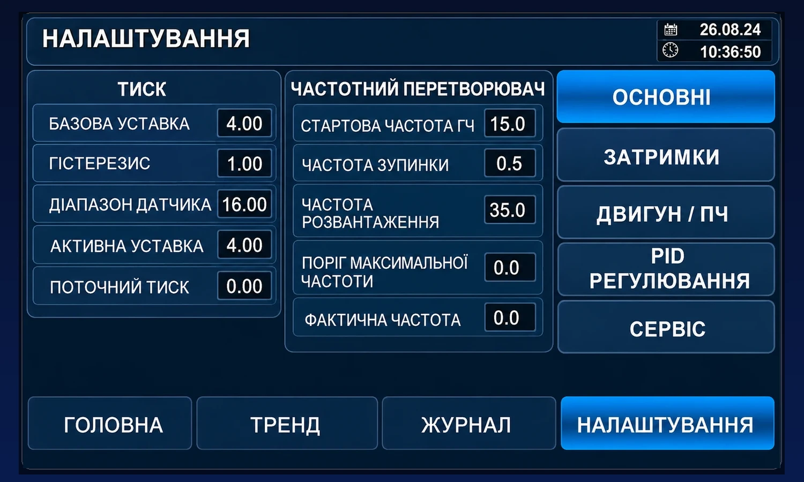
Кожна вкладка меню «НАЛАШТУВАННЯ» має власний набір параметрів. Для оператора це орієнтир, де саме шукати потрібне поле, а для сервісу — карта доступу до відповідних уставок.
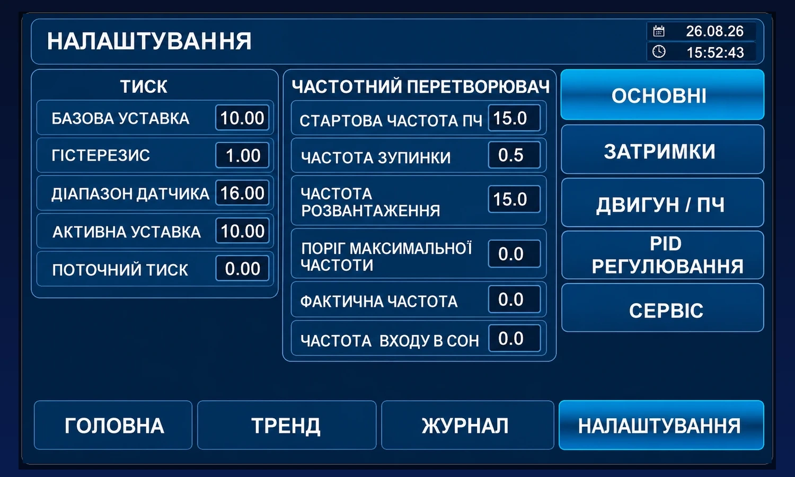
Базові параметри тиску та ключові частотні пороги.
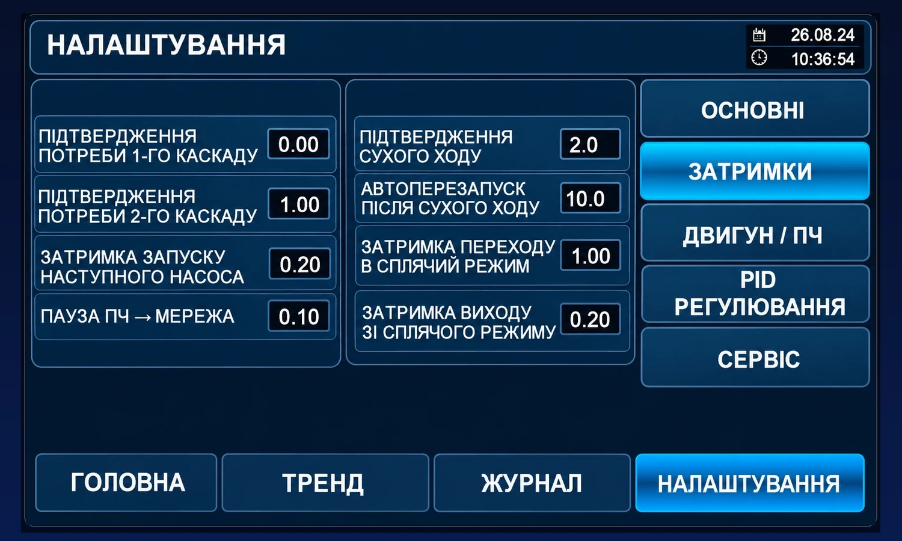
Часові витримки каскаду, сухого ходу та режиму сну.
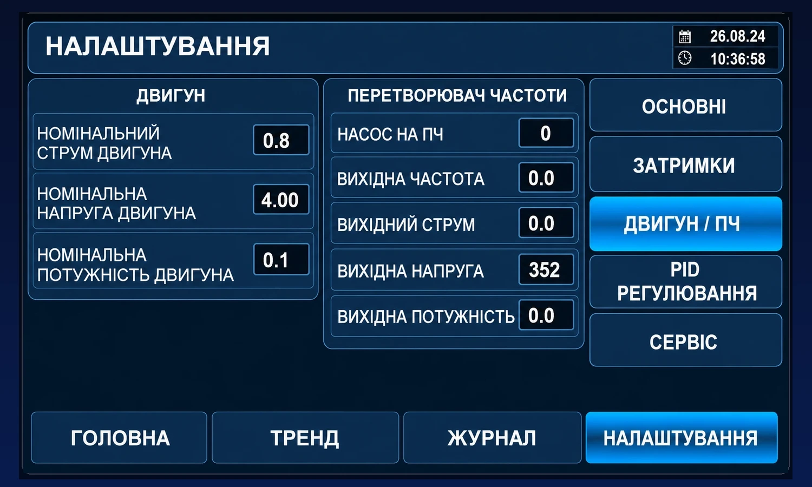
Паспортні дані двигуна та фактичні вихідні параметри перетворювача.
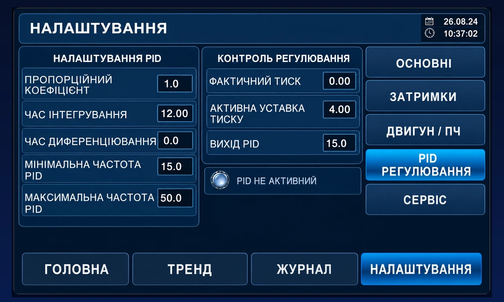
Параметри регулятора та поточні сигнали керування.
Розділ «СЕРВІС» складається з чотирьох окремих сторінок. Вони призначені для налагодження, діагностики й технічного обслуговування, тому оператор використовує їх переважно для перегляду або передачі значень сервісному персоналу.
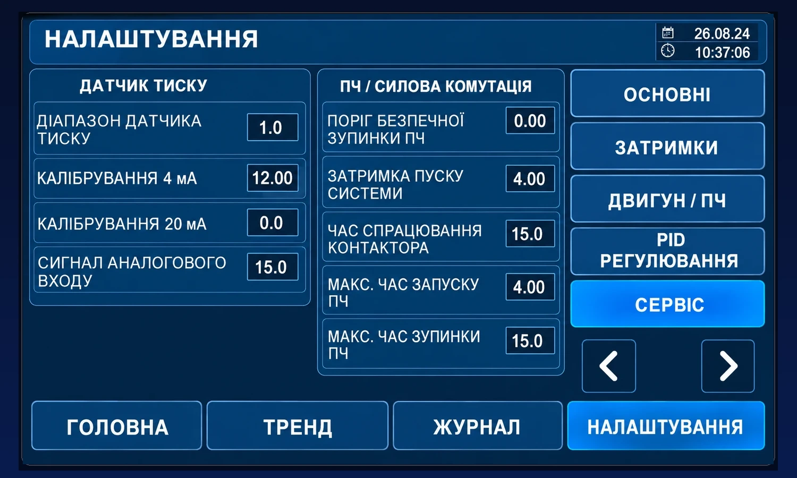
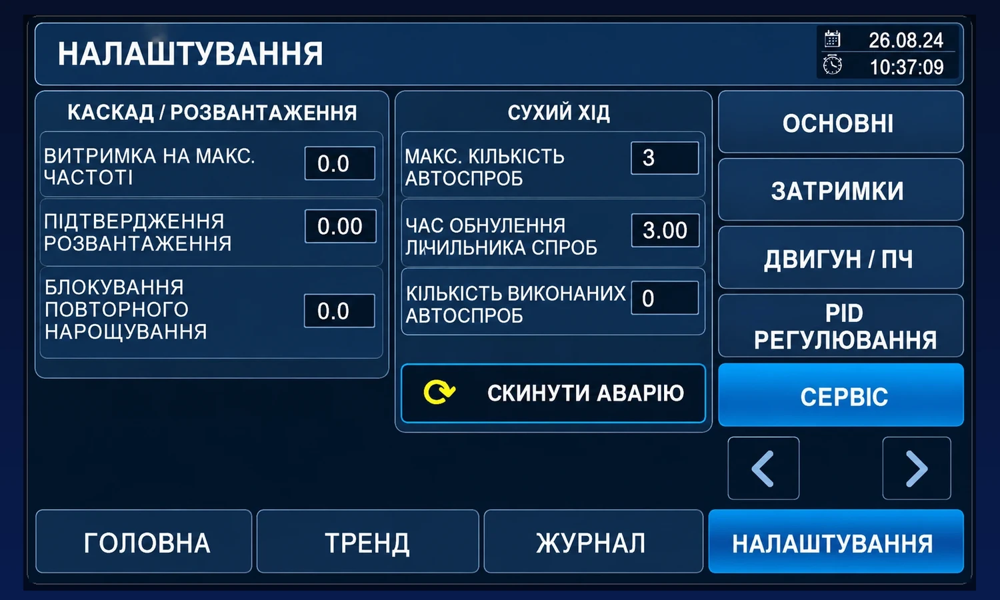
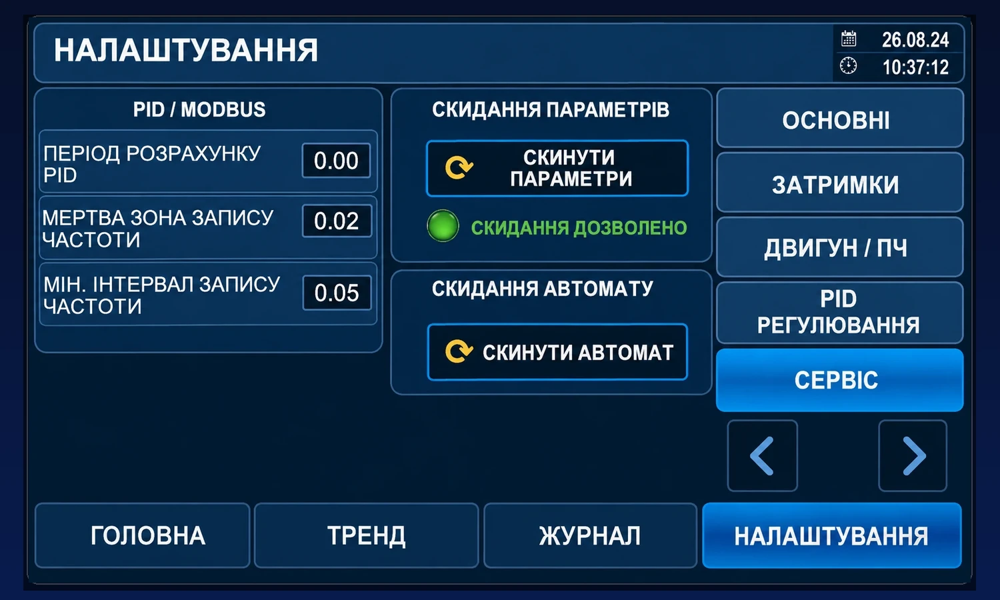
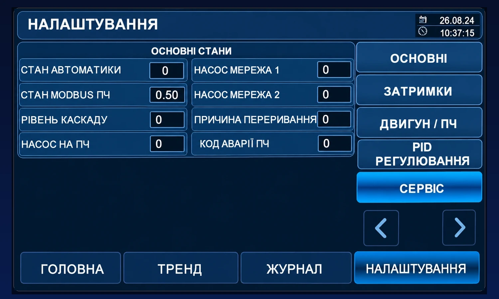
Добовий профіль T1–T4 та автоматична зміна активної уставки.
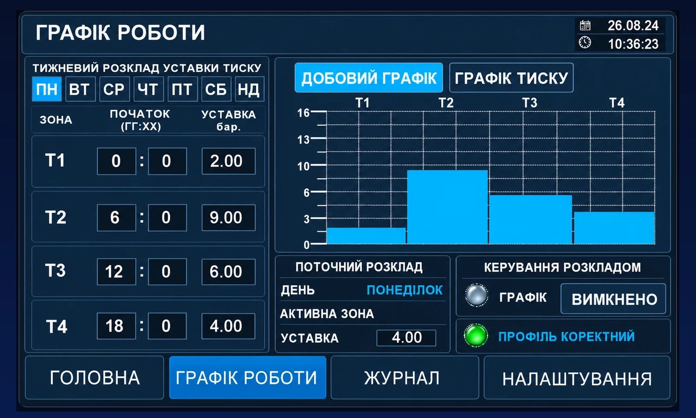
| Що дивитися | Нормальна ознака |
|---|---|
| ДЕНЬ | Відповідає поточному дню. |
| АКТИВНА ЗОНА | T1–T4 змінюється у задані моменти. |
| УСТАВКА | Відповідає значенню активної зони. |
| ПРОФІЛЬ КОРЕКТНИЙ | Профіль прийнятий системою як коректний. |
Перегляд і аналіз зміни PV, SP, частоти та струму у часі.
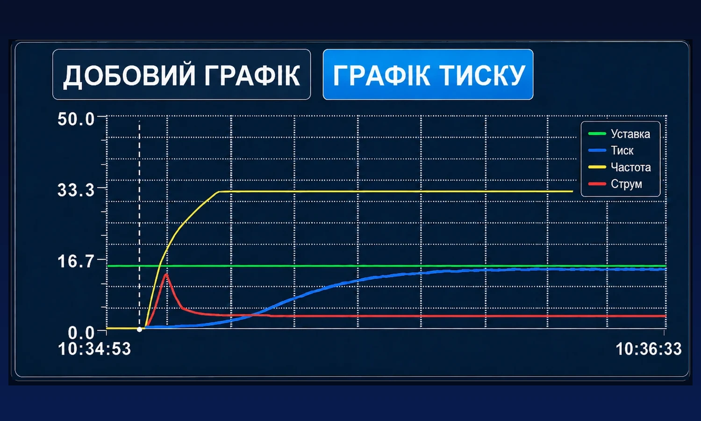
Чи наближається до активної уставки та чи немає тривалого відхилення.
Чи відповідає поточному режиму або зоні тижневого графіка.
Чи змінюється регулювальний вплив відповідно до потреби системи.
Нетипові зміни порівнюйте з частотою, станами насосів і журналом.
Хронологія запусків, зупинок, переходів, каскаду та аварійних подій.
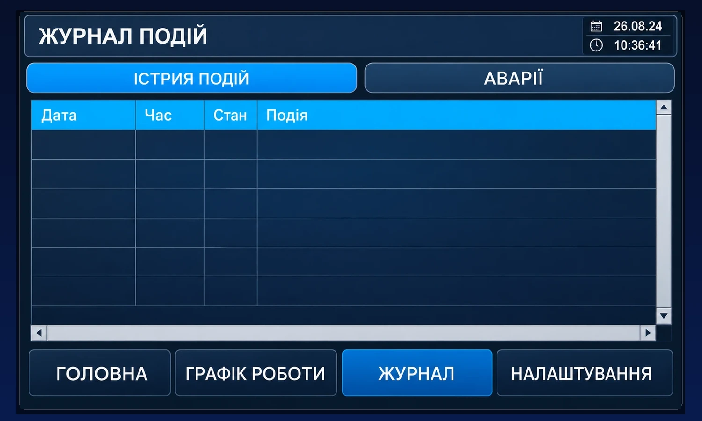
Коли сталася зупинка або зміна режиму.
Дивитися хронологічну послідовність.
Режим сну або каскад не є аварією самі по собі.
Зафіксувати час, PV, SP, f/I та текст ключової події.
Поточні нештатні стани та порядок перевірки причини.
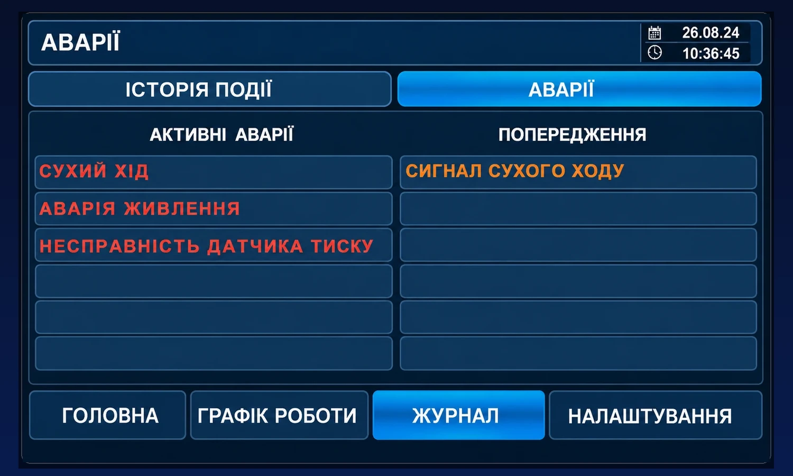
Відкрити «ЖУРНАЛ → АВАРІЇ».
Сухий хід, живлення, датчик тиску або інший підтверджений стан.
Не виконувати скидання, поки вона активна.
Виконати штатну команду «СКИНУТИ АВАРІЮ».
Якщо аварія повернулась — повторні скидання припинити.
Сервісна структура параметрів, команд і контрольованих змін.
| Сторінка | Група | Ключові параметри / команди | Тип використання |
|---|---|---|---|
| 1/4 | Датчик тиску / силова комутація | Діапазон датчика, калібрування 4 мА / 20 мА, сигнал аналогового входу, поріг безпечної зупинки ПЧ, затримка пуску, час спрацювання контактора, максимальні часи запуску та зупинки ПЧ | Калібрування та контроль силової послідовності |
| 2/4 | Каскад / сухий хід | Витримка на максимальній частоті, підтвердження розвантаження, блокування повторного нарощування, автоспроби сухого ходу, лічильник, скидання аварії | Стабілізація каскаду та захисна автоматика |
| 3/4 | PID / Modbus / скидання | Період розрахунку PID, мертва зона запису частоти, мінімальний інтервал запису частоти, скидання параметрів, індикатор дозволу, скидання автомата | Регулятор, обмін з ПЧ, сервісне відновлення |
| 4/4 | Основні стани | Стан автоматики, стан Modbus, рівень каскаду, призначення насосів, причина переривання, код аварії ПЧ | Діагностика поточного кроку та першопричини |
Діагностичні коди автоматики, Modbus, каскаду, призначення насосів та причин переривання.
Робота одного насоса від ПЧ, каскад, розвантаження, режим сну та контрольована зупинка.
ПЧ регулює продуктивність насоса для підтримання активної уставки.
1 × МЕРЕЖА-АВТО + 1 × ПЧ-АВТО. Контролювати тиск, не перемикати насоси вручну.
2 × МЕРЕЖА-АВТО + 1 × ПЧ-АВТО. Контролювати тиск та відсутність аварій.
При зменшенні потреби автоматика сама зменшує кількість працюючих насосів.
Штатна автоматична зупинка при малій або відсутній потребі у водоподачі.
ПЧ плавно знижує частоту до безпечного завершення зупинки. Не втручатися.
Захисний стан, який принципово відрізняється від режиму сну.
Після підтвердження сухого ходу робота насосної групи припиняється. Кількість автоматичних спроб відновлення обмежена.
Не орієнтуватися лише на бажання запустити систему.
Зафіксувати час і текст повідомлення.
Не виконувати багаторазове ручне скидання.
Проконтролювати штатний запуск. Якщо автоспроби вичерпані — усунути причину та виконати штатне скидання.
Припинити спроби і передати систему в сервіс.
Швидкий покажчик робочих процедур без дублювання технічних умов.
Цей розділ є швидким покажчиком до вже описаних процедур. Він не дублює технічні умови та не замінює відповідний основний розділ.
Симптом → перша перевірка → подальша дія.
Перша перевірка: PV, SP і журнал на подію переходу в режим сну.
Дія: якщо режим сну підтверджено — дочекатися автоматичного виходу при зниженні тиску.
Перша перевірка: фізичний режим АВТО, живлення, сухий хід, зв’язок із ПЧ, активні аварії, достовірність тиску.
Дія: перевірити журнал і доступність насоса. «ПОМИЛКА РЕЖИМІВ» — спочатку перевірити перемикачі.
Перша перевірка: частота ПЧ, стан ПЧ-АВТО, склад працюючих насосів, сухий хід та аварії.
Дія: якщо всі доступні насоси працюють, але тиск не відновлюється — зафіксувати дані й передати в сервіс.
Перша перевірка: індикатор «ЗВ’ЯЗОК З ПЧ» і журнал.
Для сервісу: стан Modbus 60 — помилка читання; 110 — помилка запису. Оператор не змінює комунікаційні параметри.
Означає: умова несправності залишається активною або повторно фіксується.
Дія: не виконувати багаторазове скидання; перевірити журнал та передати інформацію відповідальному працівнику.
Означає: несумісний стан керування насосом.
Дія: не продовжувати пуски; перевірити фізичні перемикачі та журнал.
Означає: насос не бере участі у штатній автоматичній роботі.
Дія: врахувати зменшення резерву; при потребі максимальної продуктивності повідомити відповідального працівника.
Перша перевірка: чи зменшується частота ПЧ і який рівень каскаду активний.
Дія: перевірити, чи автоматика виконує розвантаження; за малого водорозбору система може перейти у режим сну.
Перша перевірка: чи зняті мережеві ступені, PV не нижче SP, частота ПЧ знижена до області входу в режим сну.
Дія: якщо мережевий насос ще працює, система спочатку повинна завершити розвантаження.
Перша перевірка: PV нижче SP, висока частота ПЧ, доступність наступного насоса, рівень каскаду та журнал.
Дія: якщо каскадна послідовність почалася, але не завершилася — зафіксувати симптом і передати сервісу.
Перша перевірка: фактична частота, PV/SP та чи виконуються умови розвантаження достатньо довго.
Дія: короткочасне зниження частоти не повинно одразу знімати мережевий насос.
Перша перевірка: графік увімкнений, день і час HMI правильні, активна зона відповідає часу, T2/T3/T4 введені правильно, «ПРОФІЛЬ КОРЕКТНИЙ».
Дія: при некоректному профілі спочатку виправити часи переходів і уставки зон.
Перша перевірка: характер помилки, сигнал аналогового входу, діапазон датчика та наявність аварії датчика.
Дія: якщо PV = 0 або різко стрибає — перевірка датчика має передувати будь-якому налагодженню PID.
Перша перевірка: який насос на ПЧ, його стан, f, I, PV, наявність води й активні аварії.
Оцінка: є f та робочий I, але PV не росте — перевірити фактичну подачу насоса і гідравліку; є f, але немає нормального I — перевірити двигун/силове коло.
Перша перевірка: стабільність PV, активна SP, гістерезис, поведінка f та сигнал датчика.
Дія: не змінювати кілька параметрів одночасно. Для сервісного налагодження спочатку зафіксувати поточні значення і визначити, який саме перехід відбувається занадто часто.
Межа операторських дій перед передачею системи в сервіс.